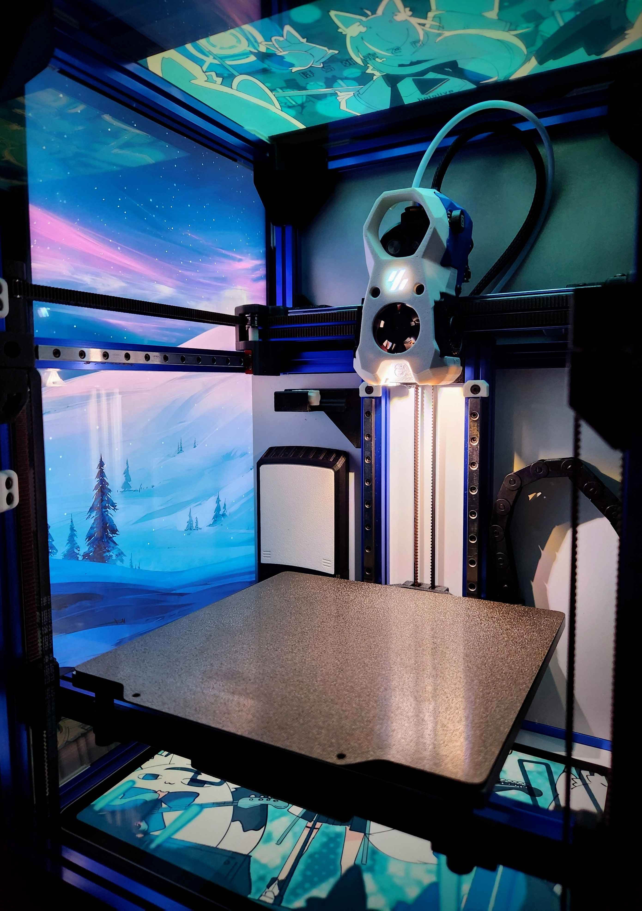
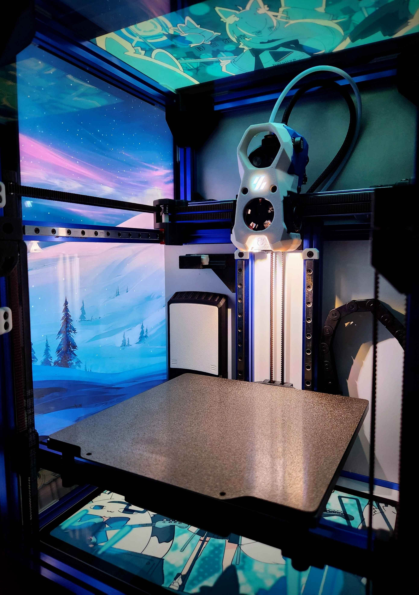

Project Overview

I built this custom 3D printer from the ground up to overcome the limitations of commercial models. Unlike standard printers that require frequent maintenance and handle a limited range of materials, my printer offers superior performance and versatility. It supports a wide variety of filaments, including high-temperature materials like ABS and nylon, thanks to its advanced hotend and heated bed. A chamber heater ensures stable printing conditions for demanding materials, while an integrated air filtration system manages fumes and reduces noise. The compact, boxy design makes the printer portable and space-efficient. Additionally, the Klipper firmware's online interface allows for seamless wireless operation without the need for an SD card.
Key Features
- Klipper Firmware Integration: Enables wireless control and real-time adjustments, resulting in a twofold increase in print speed compared to similarly priced printers.
- Chamber Heating: A custom-designed chamber heater reaches 70°C in under 10 minutes, reducing material warping by 30%, especially for high-temperature filaments like ABS and nylon.
- Triple Z-Belt Automatic Leveling: Eliminates the need for manual bed leveling, significantly enhancing first-layer consistency and reducing setup time.
- Compact but Efficient Design: Optimized frame accommodates a 165mm x 165mm print bed within a 280mm footprint, achieving a 60% bed-to-frame ratio while maintaining rigidity.
- Enhanced Material Compatibility: Supports a wide range of filaments, including PCCF and nylon, expanding the possibilities for diverse printing projects.
- Integrated Air Filtration System: Safely handles fumes from materials like ABS, ensuring a healthier printing environment and reducing operational noise.
Gallery
 
